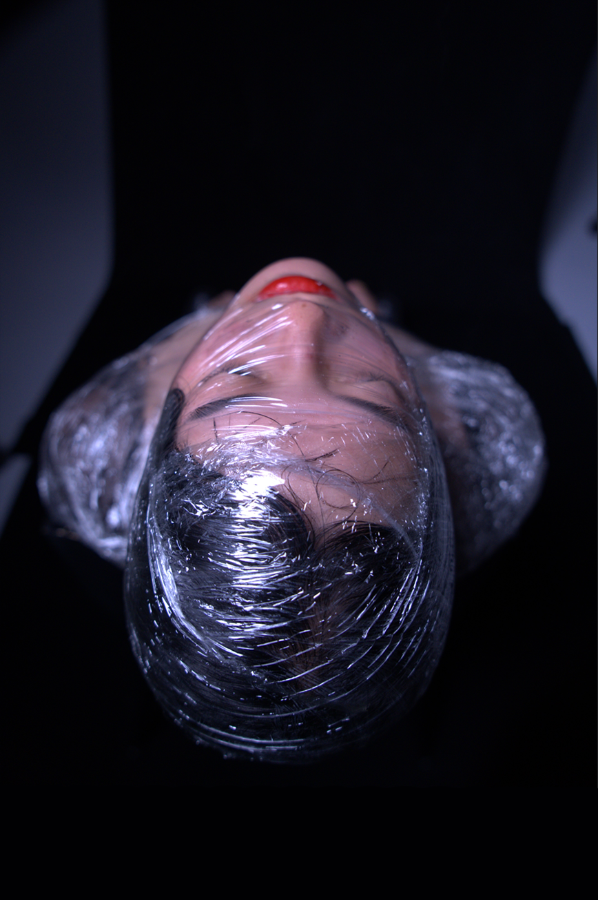

0
PHOTOGRAPHY (EDITING) &
3D ART PORTFOLIO
MENU
CLOSE
INSTAGRAM
MAIL
ABOUT
home home home home home home home home home home home home home home home home home home home home home home home home home home
1/20

lalala
lalala